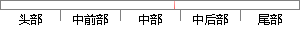

反之，的值偏离1的程度越大，其与死亡的关系就越密切。
片段位置图

相似结果|
1
原句片段：反之，的值偏离1的程度越大，其与死亡的关系就越密切。
相似片段 1：理论值偏离的程度;然后判断这一偏离程度是否属于抽样...值越大,观测值与理论值相差也 就越大,反之越小...(T) 例:调查某人群发现:吸烟者中有50人死亡,250...
|
※ 片段修改建议 ※
近似词参考：- 程度：水平
- 死亡：灭亡 殒命
- 关系：干系 瓜葛
- 密切：紧密亲密 亲近 亲密 亲昵 亲切
系统自动生成语句：反之，的值偏离1的水平越大，其与灭亡的干系就越紧密亲密。
注：本片段修改建议为系统自动生成，仅供参考。